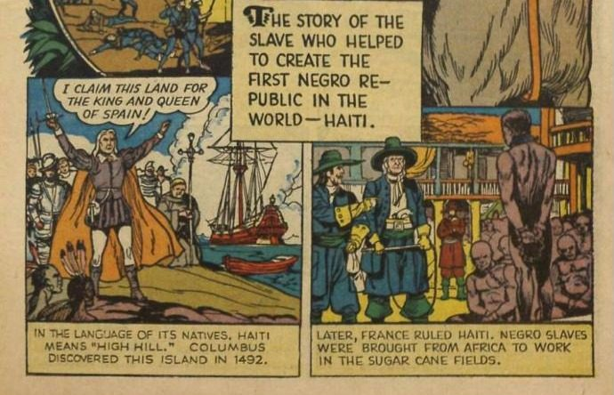

You're the fact-checker. For each part: read the comic on the left → get the check right → read the fact file → write 1–2 sentences. Done = all parts green, then turn in at the bottom.
Word help (tap to open)
- Saint-Domingue (san doh-MANG) = France's name for Haiti before 1804
- Colony = land ruled by a faraway country
- Republic = a country with no king, run by leaders the people choose
- Louverture (loo-ver-TOOR) = "the opening" in French
- Negro = an old word for Black people the comic uses. We don't use it today.
- 1942 comic = made for American kids in the 1940s. It uses some old words and shows one point of view.

Click the page to make it bigger.
Turn in your work
Your work saves on this device, so you can come back later. Your teacher sees it after you turn it in.
Comic: Real Heroes no. 3 (1942), Parents' Magazine Press, a true-history comic for kids. Public domain. Page images from Comic Book Plus (comicbookplus.com). Cropped to today's reading.